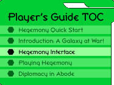
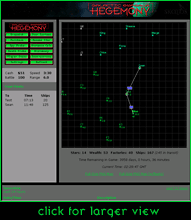

|
The Hegemony InterfaceGalactic Emperor: Hegemony is played through a simple Java interface which you access at http://hegemony.skotos.net/game/###/. You will receive your precise game number sometime after you sign up for a game. The strategic display is easy to use and provides you with everything that you need to take over the galaxy. It is divided into five parts: the command pad; technology & wealth information; fleet reports; the galactic display; and the newswire. The Command PadThe command pad, located at the top left of the strategic display gives you access to the basic commands that you will need in order to conquer the galaxy. The following buttons are present:
Technology & Cash InformationThis small box lists your current cash as well as the technological status of your fleet. It includes:
Fleet ReportsThis box, running down the left-hand side of the galactic display, lists all of your fleets which are currently in transit. For each fleet it lists where the fleet is going to, how long before it arrives, and how many ships are in the fleet. By clicking on the word Time Left you may instead see at which time ships arrive. This may also be set permanently via the Settings button. Galactic DisplayThe main portion of the strategic display is a colored map which takes up most of the right of the screen. It shows a portion of the galaxy as well as fleet movements. By clicking on the map you'll cause the map to redraw with where you clicked as the new center. This will allow you to scroll around the map. Each of your stars shown in the display contains three bits of information, two to the right of the star, seperated by a colon, and one below the star. In order they are wealth:fleets, factories. These are:
If you have Death Shields (DS) and Spy Shields (SS) these will also be listed here, to the right of your factories. Note that this additional information only appears for stars that you control. After clicking on the galactic display, you can also hit the following keys:
The Settings button may be clicked to make some of toggles default. A newer, more modern map is also available for use through Settings; check "New Map", then click "Save Changes" to use it. This new map looks nicer, and has some animated graphics, but also contains some additional functionality. You may click on a "source" star, then a "destination" star to immediately see distance and time without going through the Distance Calc button. Range circles can also be seen on a per-planet basis, which can be useful when trying to figure out where your ships can go. This newer map may not work on some machines running older versions on Java, which is why the older map remains the default. Below the main galactic display is a set of related information. These include:
Finally two links can be used to pop up maps of the entire galaxy. NewswireThe entire bottom of the screen is taken up by a newswire which reports important happenings within your portion of the galaxy. Typically the on-screen newswire lists what happened in the last 24 hours. A nearby link allows you to see a listing of the last 72 hours. You'll see the following personal information:
You'll also see the following general information on the state of the galaxy:
|